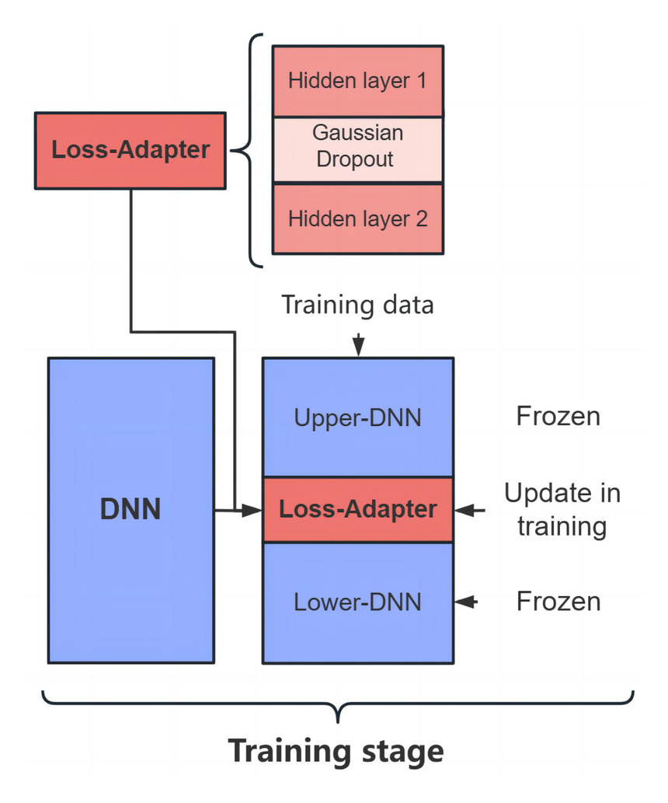
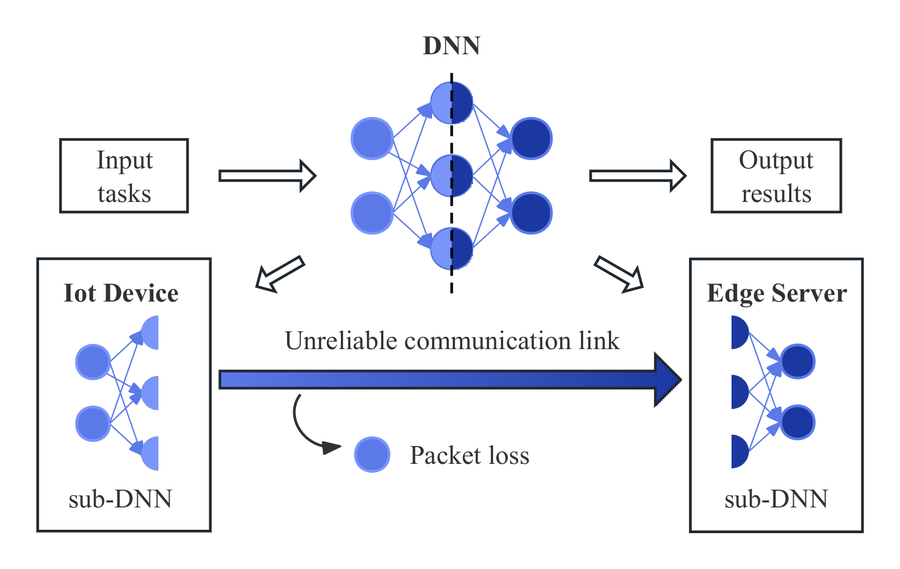

I'm a PhD student in the Ohtsuki Laboratory at Keio University, working with Prof. Tomoaki Ohtsuki, where I also earned my M.Eng. My research sits at the intersection of machine-learning systems and perception: fault-tolerant distributed inference for lossy IoT environments, and radar–camera depth estimation built on selective state-space (Mamba) models. I'm especially interested in methods that stay robust when real-world signals are noisy, sparse, or partially lost.
Latest News
May 2026
New Preprint on arXiv
Our paper “Selection, Not Fusion: Radar-Modulated State Space Models for Radar-Camera Depth Estimation” is now available on arXiv.
2025
Published in IEEE IoT Journal
“Loss-adapter: Addressing network packet loss in distributed inference for lossy IoT environments” appeared in the IEEE Internet of Things Journal.
2025
Presented at IEEE ICC 2025
“A Plug-and-Play Module for Enhancing Fault-Tolerant Distributed Inference Based on Gaussian Dropout” was presented at ICC 2025 in the IEEE International Conference on Communications.
Publications

Selection, Not Fusion: Radar-Modulated State Space Models for Radar-Camera Depth Estimation
Zhangcheng Hou, Tomoaki OhtsukiarXiv '26
Injecting radar features inside the Mamba selective state-space (modulating Δ and C) rather than only pre-blending modalities, for more robust radar–camera depth estimation.

Loss-adapter: Addressing Network Packet Loss in Distributed Inference for Lossy IoT Environments
Zhangcheng Hou, Tomoaki OhtsukiIEEE IoT-J '25
A method that keeps split / distributed neural inference accurate when intermediate feature packets are dropped over unreliable IoT networks.

A Plug-and-Play Module for Enhancing Fault-Tolerant Distributed Inference Based on Gaussian Dropout
Zhangcheng Hou, Tomoaki OhtsukiIEEE ICC '25
A drop-in module that improves the fault tolerance of distributed inference by training models to withstand feature corruption with Gaussian dropout.